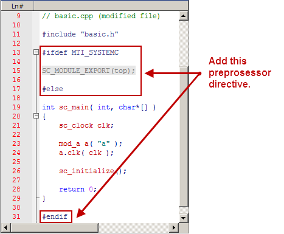
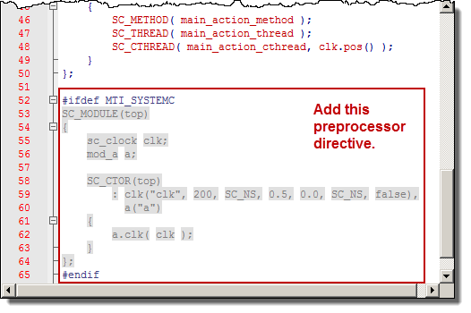

There are
a few steps you must take to prepare a SystemC design to run on Questa SIM.
Prerequisites
For an Open
SystemC Initiative (OSCI) compliant SystemC design to run on Questa SIM, you must first:
Replace sc_main() with
an SC_MODULE, potentially adding a process to contain any test bench
code.
Replace sc_start() by
using the run command in the GUI.
Remove
calls to sc_initialize().
Export
the top level SystemC design unit(s) using the SC_MODULE_EXPORT
macro.
In order to
maintain portability between OSCI and Questa SIM simulations,
we recommend that you preserve the original code by using #ifdef
to add the Questa SIM-specific
information. When the design is analyzed, sccom recognizes the MTI_SYSTEMC preprocessing
directive and handles the code appropriately.
For more information
on these modifications, refer to Modifying SystemC Source Code in the User’s
Manual.
Procedure
- Create a
new directory and copy the tutorial files into it.
Start by
creating a new directory for this exercise (in case other users
will be working with these lessons). Create the directory, then
copy all files from <install_dir>/examples/systemc/sc_basic into
the new directory.
- Start Questa SIM and change to the
exercise directory.
If you just
finished the previous lesson, Questa SIM should
already be running. If not, start Questa SIM.
- Type vsim at a UNIX shell prompt or use the Questa SIM icon in Windows.
If the Welcome
to Questa SIM dialog box
appears, click Close.
- Select and
change to the directory you created in step 1.
- Use a text
editor to view and edit the basic_orig.cpp file.
To use the Questa SIM editor, from
the Main Menu choose . Change the files of type
to C/C++ files then double-click basic_orig.cpp.
- If you are
using the Questa SIM editor,
right-click in the source code view of the basic_orig.cpp file
and uncheck the Read Only option in the popup menu.
- Using the
#ifdef MTI_SYSTEMC preprocessor directive, add the SC_MODULE_EXPORT(top);
to the design as shown in Figure 1.
- Save the
file as basic.cpp.
Figure 1. The SystemC File After
Modifications
A correctly
modified copy of the basic.cpp is also available
in the sc_basic/gold directory.
- Edit the basic_orig.h header
file as shown in Figure 2.
- If you are
using the Questa SIM editor,
right-click in the source code view of the basic_orig.h file
and uncheck the Read Only option in the popup menu.
- Add a Questa SIM specific SC_MODULE
(top) as shown in lines 52 through 65 of Figure 2.
The declarations
that were in sc_main are placed here in the header file, in SC_MODULE
(top). This creates a top level module above mod_a,
which allows the tool’s automatic name binding feature to properly
associate the primitive channels with their names.
Figure 2. Editing the SystemC
Header File.
- Save the
file as basic.h.
A correctly
modified copy of the basic.h is also available
in the sc_basic/gold directory.
- You have
now made all the edits that are required for preparing the design
for compilation.